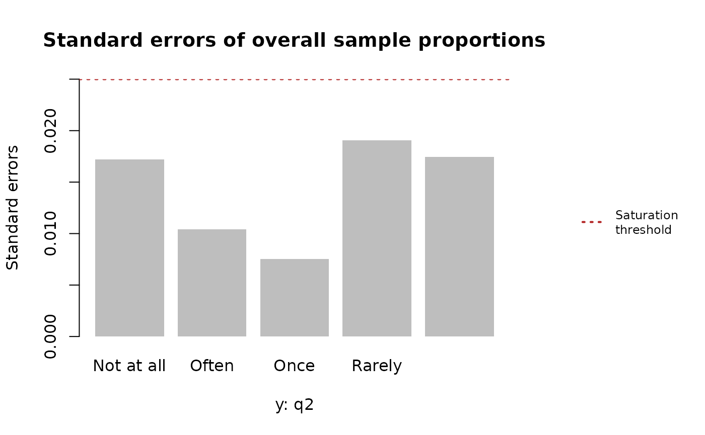

With the package installed and loaded into the current R environment, we may begin exploring the functionality of this package through examples.
library(satpt)
#>
#> Attaching package: 'satpt'
#> The following object is masked from 'package:stats':
#>
#> simulateExamples
Basic usage of satpt
To start, we will load in the example Difficult Diagnoses data to work with.
# Load diagnoses data
data(diagnoses)
str(diagnoses)
#> List of 3
#> $ wave: num [1:643] 2 3 3 2 2 3 3 3 2 3 ...
#> $ q1 : chr [1:643] "Broadrange|Wholegenome|MNGS" "Broadrange|Wholegenome|MNGS" "Broadrange|MNGS" "Broadrange" ...
#> $ q2 : Factor w/ 5 levels "Not at all","Once",..: 4 5 4 2 3 3 3 3 4 4 ...
## Turn diagnoses data into data.frame
diagnoses <- do.call(what = "cbind.data.frame", args = diagnoses)We will start by examining whether the responses collected in the
second question (q2) of the diagnoses data
achieved saturation.
levels(diagnoses$q2)
#> [1] "Not at all" "Once" "Rarely" "Sometimes" "Often"The res object below is a satpt object that
contains the results of the saturation point analysis and is structurely
a R list with twelve elements produced by main
function satpt::satpt(). You may see the documentation
of satpt::satpt() for a detailed description of all the
elements of a satpt object.
res <- satpt::satpt(y = diagnoses$q2, threshold = 0.025)For a basic examination of the saturation point analysis, you may simply print the results object. This will provide information of whether the maximum standard errors of the response categories are less than or equal to the saturation threshold along with sample proportions and standard errors of the response categories. In this example, the default saturation threshold of 0.025 was used and the maximum standard error was less than 0.025. Thus, saturation of the response categories is achieved.
print(res)
#> Analysis based on: q2
#> Saturation achieved? Yes
#>
#> Overall Sample Proportions and Standard Errors
#> ==============================================
#> y: q2
#> Statistics Not at all Often Once Rarely Sometimes
#> Proportion 0.2531 0.0750 0.0375 0.3688 0.2656
#> SE 0.0172 0.0104 0.0075 0.0191 0.0175When a more detailed look at the analysis is warranted, simply call
summary()
on the returned satpt object, as seen below.
summary(res)
#>
#> Saturation point analysis of sample proportions
#> ===============================================
#>
#> Analysis based on: q2
#> Saturation achieved? Yes
#> Saturation threshold of 0.025
#> Responses collected from a sample size of 640
#>
#> Overall sample proportions
#> ============================================
#> y: q2
#> Not at all Often Once Rarely Sometimes
#> Overall 0.2531 0.075 0.0375 0.3688 0.2656
#>
#>
#> Overall standard errors
#> =========================================
#> y: q2
#> Not at all Often Once Rarely Sometimes
#> Overall 0.0172 0.0104 0.0075 0.0191 0.0175The goal of summary()
is to provide a conditional comphrensive overview of the saturation
point analysis similar in style to results produced by SAS
procedures.
Another way of examining saturation point analysis is graphical by plotting the standard errors of the overall sample proportions for each response category in relation to the saturation threshold. With all the standard errors falling below the saturation threshold, we would say that we have achieved saturation for these responses.
graphics::par(oma = c(0, 0, 0, 8))
plot(res)
# adding legend
satpt::legend_right(
legend = "Saturation\nthreshold",
col = "firebrick", lty = 3, lwd = 2,
cex = 0.75
)
Possibility of response bias
There will be times the data collection process leads to responses
with the potential of having response bias. Thus, when performing
saturation point analysis we must test for response bias and if response
bias is present, we must account for that bias in the saturation point
analysis. One example where response could be present is collecting data
in waves based on non-responses in the previous waves. The
diagnoses data previously explored was collected in this
manner. Presented below is the number of responses collected for the
second question for each data collection wave.
stats::ftable(x = diagnoses$wave)
#> x 1 2 3
#>
#> 324 147 172So, we are going to examine the responses collected in each wave for saturation, where the previous wave of responses will be included in the current wave and the saturation threshold is 0.025.
First data collection period
During the first data collection period, we are going to assume response bias is not possible because the responses were not collected due to non-responses in the previous wave, as there was no “previous” data collected.
# Subsetting the data to only include data collected during the first wave
diagnoses1 <- subset(x = diagnoses, subset = wave == 1)
# Performing saturation point analysis
res1 <- satpt::satpt(
y = diagnoses1$q2,
threshold = 0.025,
dimnames = "Responses to survey"
)
print(res1)
#> Analysis based on: q2
#> Saturation achieved? No
#>
#> Overall Sample Proportions and Standard Errors
#> ==============================================
#> y: Responses to survey
#> Statistics Not at all Often Once Rarely Sometimes
#> Proportion 0.2623 0.0833 0.0463 0.3364 0.2716
#> SE 0.0244 0.0154 0.0117 0.0262 0.0247Second data collection period
The results from the first data collection period show that
saturation was not achieved, as the maximum standard error of the
response items was not less than or equal to the saturation threshold.
So, we’ll examine the data collected during the first and second data
collection period for saturation of responses. For this analysis, we
must account for the possibility of response bias by specifying the
by argument in satpt::satpt()
because the responses collected during the second wave include responses
from EIN members who did not respond previously.
# Subsetting the data to only include data collected during the first and second
# waves of data
diagnoses2 <- subset(
x = diagnoses,
subset = wave %in% c(1, 2)
)
# Performing saturation point analysis
res2 <- satpt::satpt(
y = diagnoses2$q2,
by = diagnoses2$wave,
threshold = 0.025,
dimnames = c("by" = "Data collection period", "y" = "Responses to survey")
)
print(res2)
#> Analysis based on: q2
#> Saturation achieved? Yes
#>
#> Overall Sample Proportions and Standard Errors
#> ==============================================
#> y: Responses to survey
#> Statistics Not at all Often Once Rarely Sometimes
#> Proportion 0.2596 0.0809 0.0426 0.3574 0.2596
#> SE 0.0202 0.0126 0.0093 0.0221 0.0202With the inclusion of the responses from the second data collection, saturation is achieved. We can take a look at the summary of the analysis, including the test of independence of the responses.
summary(res2)
#>
#> Saturation point analysis of sample proportions
#> ===============================================
#>
#> Analysis based on: q2
#> Saturation achieved? Yes
#> Saturation threshold of 0.025
#> Responses collected from a sample size of 470
#>
#> Data interval and overall sample proportions
#> ============================================
#> y: Responses to survey
#> by: Data collection period Not at all Often Once Rarely Sometimes
#> 1 0.2623 0.0833 0.0463 0.3364 0.2716
#> 2 0.2534 0.0753 0.0342 0.4041 0.2329
#> Overall 0.2596 0.0809 0.0426 0.3574 0.2596
#>
#>
#> Data interval and overall standard errors
#> =========================================
#> y: Responses to survey
#> by: Data collection period Not at all Often Once Rarely Sometimes
#> 1 0.0244 0.0154 0.0117 0.0262 0.0247
#> 2 0.0360 0.0218 0.0151 0.0406 0.0350
#> Overall 0.0202 0.0126 0.0093 0.0221 0.0202
#>
#> Pooled standard errors? No
#>
#> Pearson's Chi-squared test
#>
#> data: y: Responses to survey given by: Data collection period
#> X-squared = 2.3255, df = 4, p-value = 0.6761
#>
#> Response bias present? No
#> Significance level: 0.05
#>
#>
#> Heterogeneity index
#> ====================
#> Categories Index
#> Not at all 0.0045
#> Often 0.0040
#> Once 0.0060
#> Rarely 0.0338
#> Sometimes 0.0194The above Pearson’s \(\chi^{2}\) test for independence shows that responses bias was not present with a non-significant p-value. Thus, signifying the responses collected during the first and second data collection waves are not statistically different. With no response bias being present, traditional standard errors for the overall sample proportions of the response categories were calculated.
Saturation thresholds
The default saturation threshold in satpt::satpt()
is 0.025 because this threshold for standard errors leads to a
confidence interval width of 0.1 around the sample proportions. More
specifically, for a \(95\%\) confidence
interval around the sample proportions that has a margin of error
(ME) of approximately
\[ ME = 1.96 \times \text{SE} = 0.05 \]
and a total width of 0.1, the saturation threshold, should be defined as 0.025. The table below provides more saturation thresholds based on confidence intervals that have a width of 0.1.
| Confidence level | Saturation threshold |
|---|---|
| 90% | 0.038 |
| 95% | 0.025 |
| 99% | 0.210 |
The saturation threshold may be as small or as large as one wants. However, the threshold must never exceed 0.25 or be lower than 0 because the maximum standard error for any sample proportion is 0.25 when the sample proportion is 0.5.